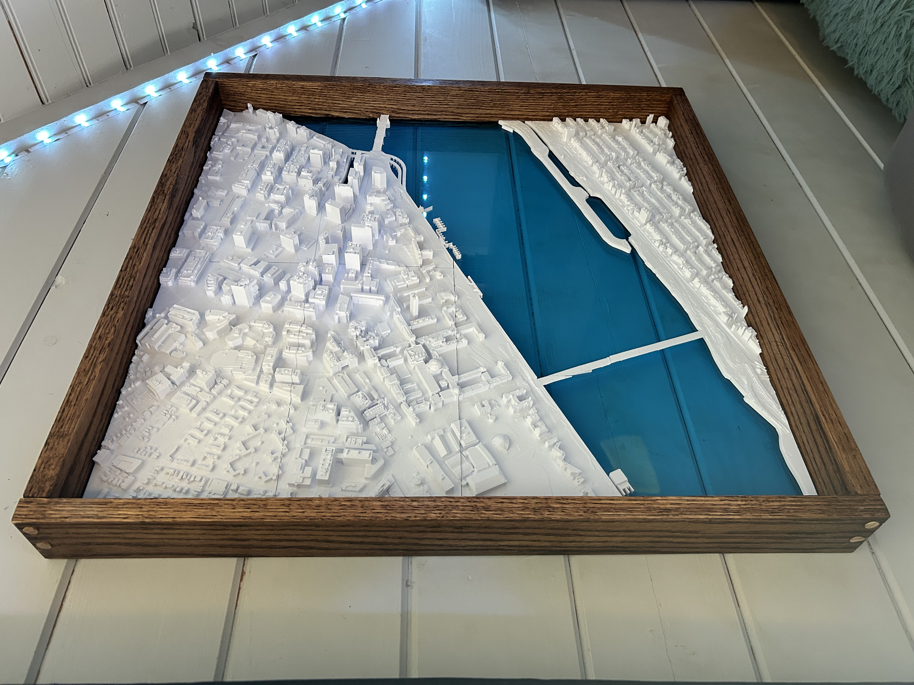
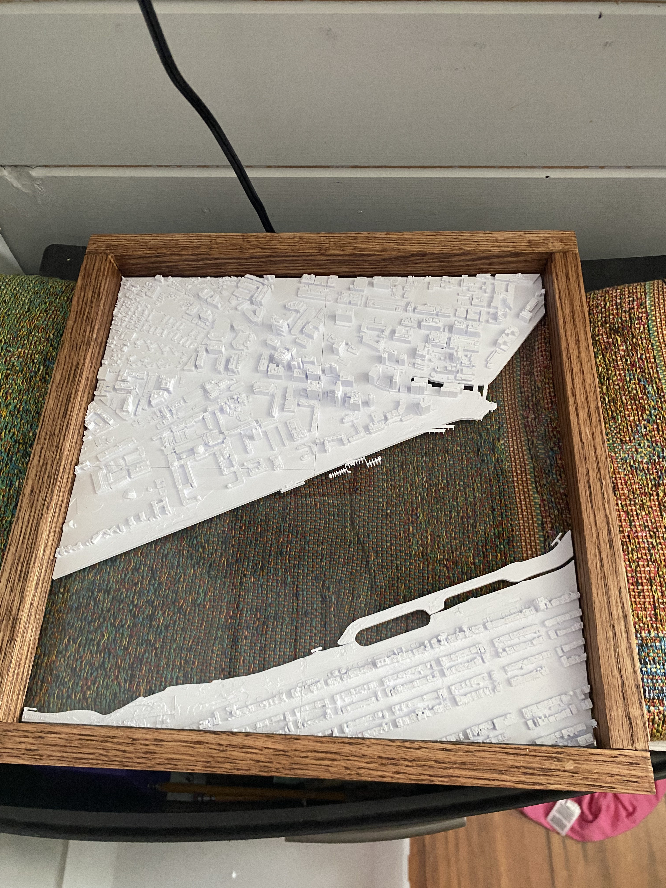
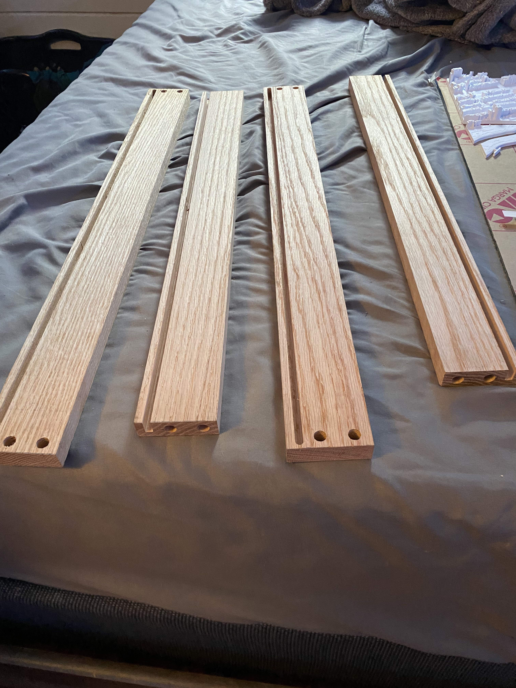
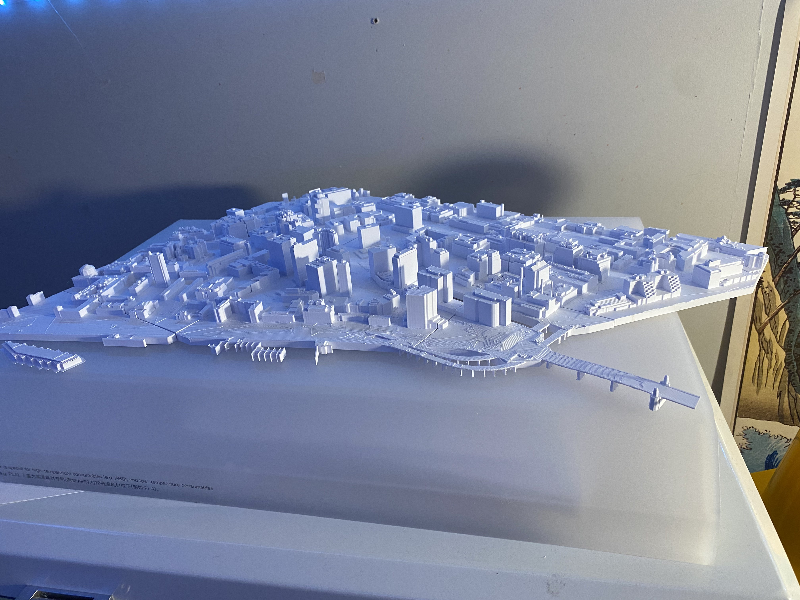
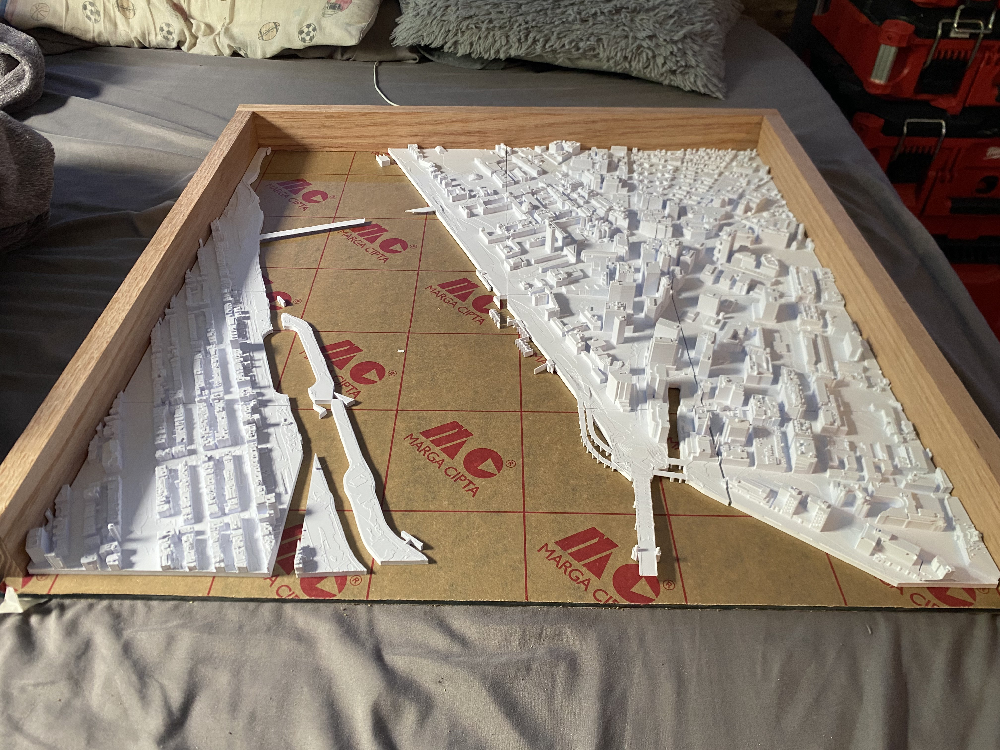
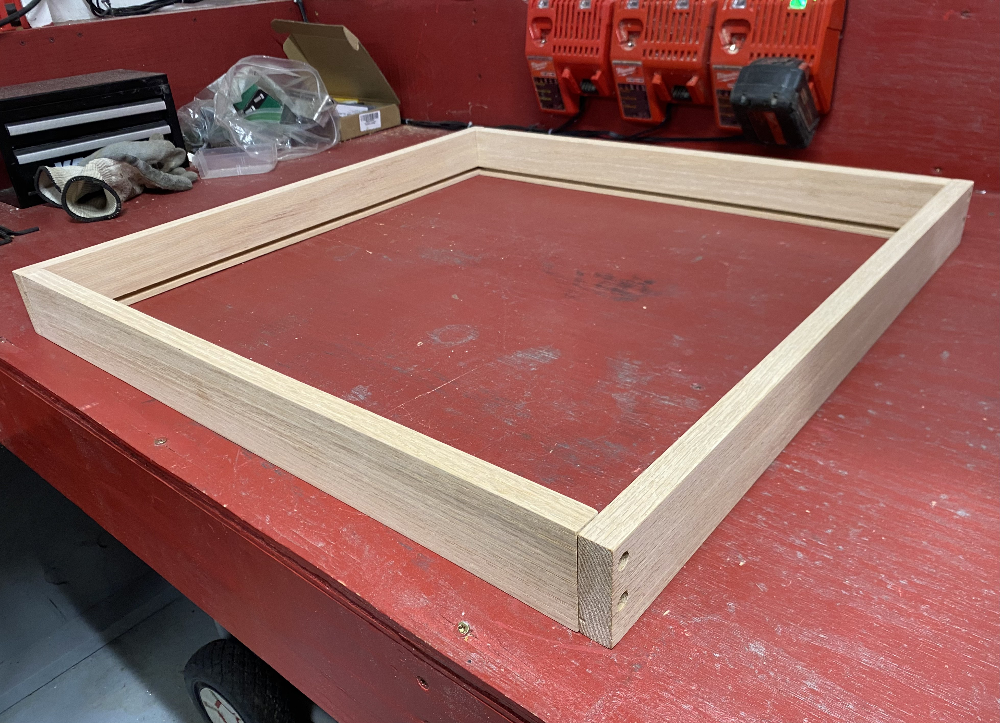
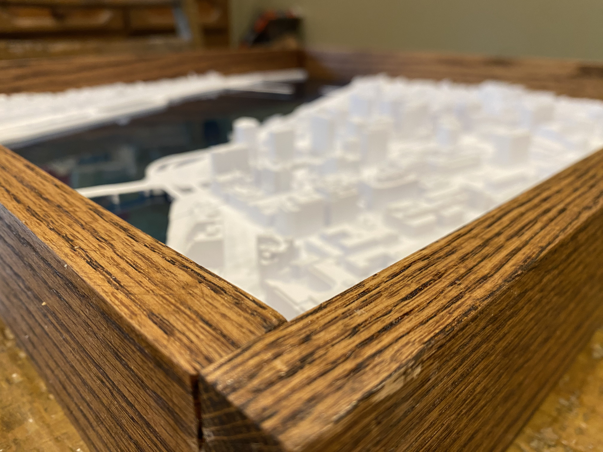
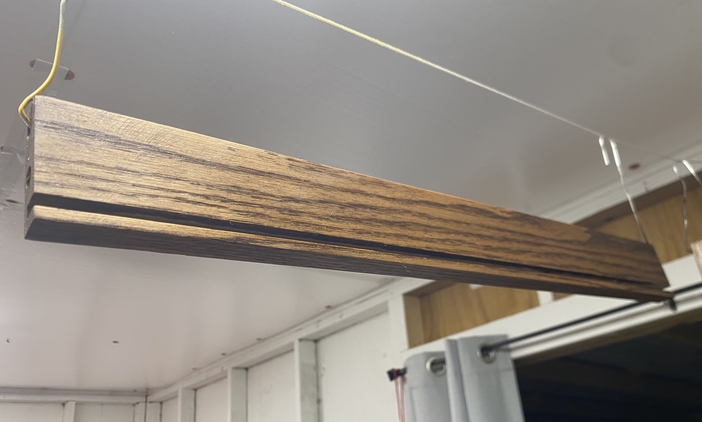

01 / PROJECT OVERVIEW
About MIT Maps
Add the project background, design goals, and a summary of your contribution here.
02 / PROJECT GALLERY
Design & Build
Project photos and fabrication views. Replace the captions with details when you are ready.







